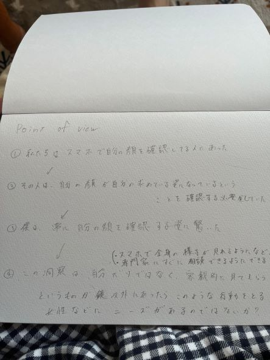
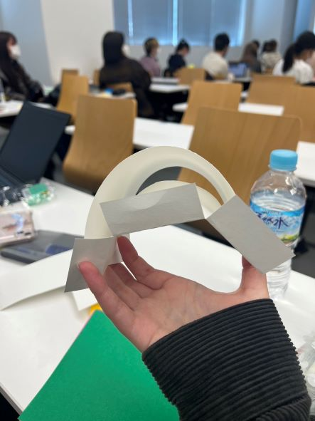
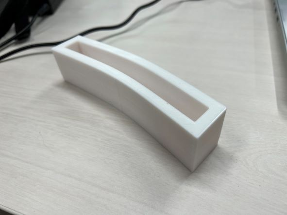

Design for Others
班での話し合い
我々の班は、電車の中でスマートフォンの画面を見て自分の前髪を直しているひとの問題を解決するものを作ることにした
Point of view

プロトタイプ
女性が多く前髪を直していたことから女性を意識したような形にしようとした。

実際にできた作品

作ってみた感想と反省点
自分たちが想像していたものとはほど遠いものとなってしまった。
思っていたよりも完成品が重くなってしまい、実際に装着してもかなり不便になってしまう。